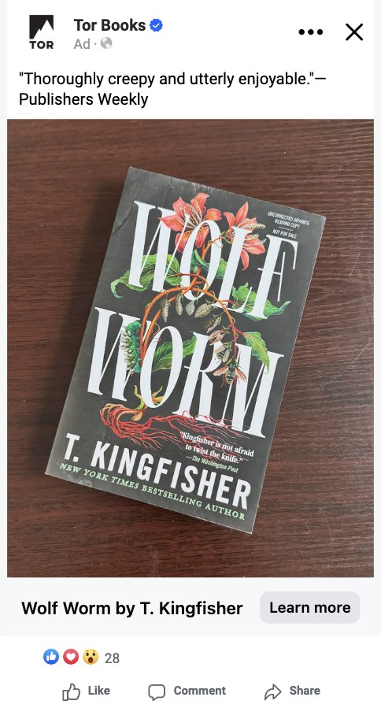
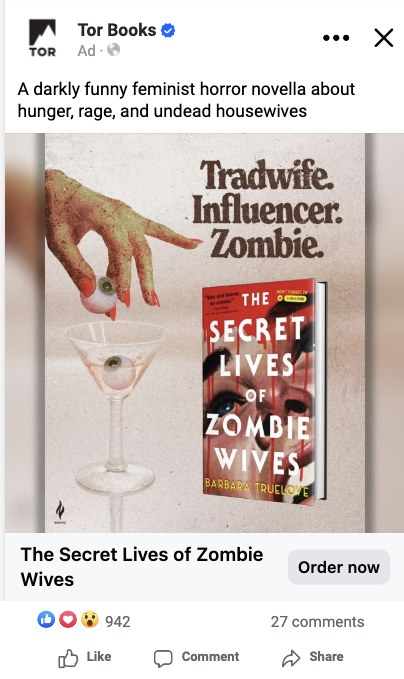
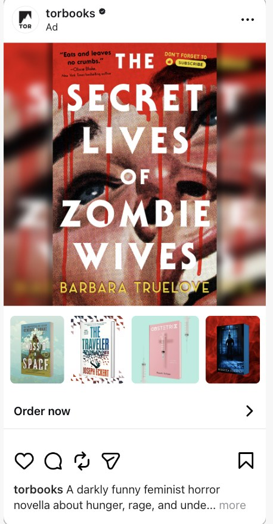
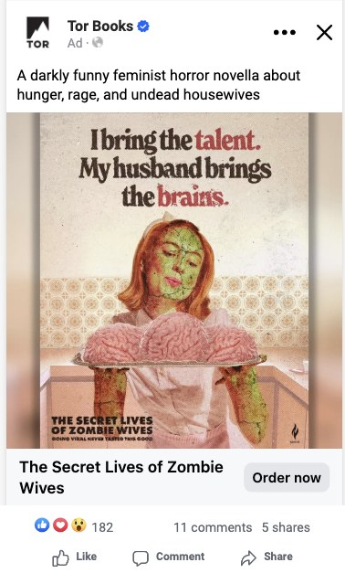
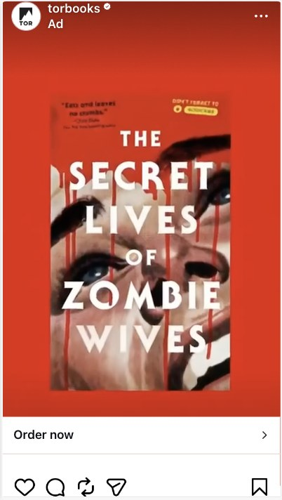
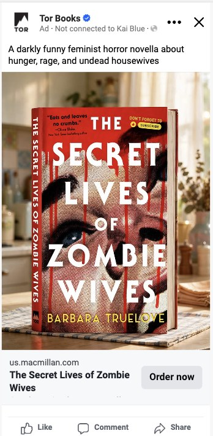

Traditional process
Today
1 2 3- 1Pull-quote copyA review quote works for trade buyers but underperforms heavily with consumers.
- 2One static imageA product shot that doesn't stand out in the feed, with no variation in creative to test against.
- 3Low engagement28 reactions, no comments, no shares.
- People
- SeveralMultiple personnel and creative discussions
- Est. time
- 3.5 hrs
- Output
- 1 ad
argus
With ARGUS
1 3
4
2

+3more variations
in the set
in the set
- 1Search-tuned ad copyKeyword-heavy lines written for SEO and GEO, so the ad matches how readers actually search.
- 2Creative variationsSeveral distinct concepts per title, from humor to mood shots, ready to test against each other.
- 3High engagementCreative and copy optimized by AI. 942 reactions and 27 comments on the lead ad.
- 4Multi-title adsCarousels pair the lead title with related backlist from the same imprint.
- People
- OneA single stakeholder signs off
- Est. time
- 2 minplus approval
- Output
- 10+ ads